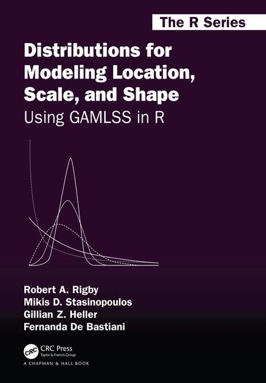
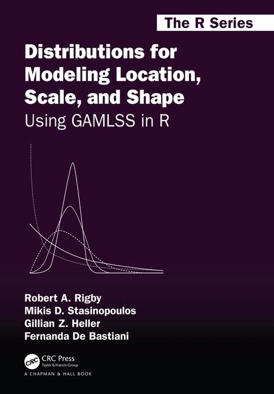

| rent | area | yearc | location | bath | kitchen | cheating |
|---|---|---|---|---|---|---|
| 109.95 | 26 | 1918 | 2 | 0 | 0 | 0 |
| 243.28 | 28 | 1918 | 2 | 0 | 0 | 1 |
| 261.64 | 30 | 1918 | 1 | 0 | 0 | 1 |
| 106.41 | 30 | 1918 | 2 | 0 | 0 | 0 |
| 133.38 | 30 | 1918 | 2 | 0 | 0 | 1 |
| 339.03 | 30 | 1918 | 2 | 0 | 0 | 1 |
Data
Introduction
checking the structure of the datadisplaying the data to identify;- outliers,
- possible x-variables transformations,
- correlation in the feature and
- possible pair-wise interactions
partitioning the data
checking the data
Data
| obs number | y | x1 | x2 | x3 | … | xr-1 | xr |
|---|---|---|---|---|---|---|---|
| 1 | y1 | x11 | x12 | x13 | … | x1r-1 | x1r |
| 2 | y2 | x21 | x22 | x23 | … | x2r-1 | x2r |
| 3 | y3 | x31 | x32 | x33 | … | x3r-1 | x3r |
| … | … | … | … | … | … | … | … |
| n-1 | yn-1 | xn-11 | xn-12 | xn-12 | … | xn-1r-1 | xn-1r |
| n | yn | xn1 | xn2 | xn3 | … | xnr-1 | xnr |
The rent 1999 Munich data
Important features
the range of the response variable,
how explanatory variables should be enter the regression
the shape of the data
missing values
NA’snames of columns
factors
the range of the response
flowchart TB A[responce] --> B(continuous) A --> C[discrete] A --> D[factor] B --> F[real line] B --> G[pos. real line] B --> H[0 to 1] C --> J[infinite count] C --> I[finite count] D --> K[unordered] D --> L[ordered] I --> N[binary] K --> N[binary]
Important for determine the distribution
explanatory variables
continuous- linear effect
- non-linear effect
factors- non ordered
- ordered
interactions
data dimension
data_dim(): information about dimensions
da |> data_dim()**************************************************************
**************************************************************
the dimensions of the data set are: 3082 by 7
number of observations with missing values; 0
% data omited; 0 %
**************************************************************
************************************************************** data_which_na(): which variables have missing observations
da |> data_which_na() rent area yearc location bath kitchen cheating
0 0 0 0 0 0 0 variable names
data_names()
da |> data_names()**************************************************************
**************************************************************
the names of variables
[1] "rent" "area" "yearc" "location" "bath" "kitchen" "cheating"
**************************************************************
************************************************************** - `data_sorter_names()’: shortening the names
da |> data_sorter_names( max=10) -> da**************************************************************
**************************************************************
the names of variables
[1] "rent" "area" "yearc" "location" "bath" "kitchen" "cheating"
**************************************************************
************************************************************** missing values
The
gamlss()function can not cope with missing values.to deal with NA’s see https://stefvanbuuren.name/fimd/
data shape

(a) \(n<p\) more obstervations than variable (b) \(n>p\) more variables than obsrvationsFactors
- any character vector
- any vector variable with a small range of distinct values,
(Intercept) x qrt2 qrt3 qrt4
1 1 1 0 0 0
2 1 2 1 0 0
3 1 3 0 1 0
4 1 4 0 0 1
5 1 5 0 0 0
6 1 6 1 0 0
7 1 7 0 1 0
8 1 8 0 0 1the structure of the data
da |> data_str()**************************************************************
**************************************************************
the structure of the data
'data.frame': 3082 obs. of 7 variables:
$ rent : num 110 243 262 106 133 ...
$ area : int 26 28 30 30 30 30 31 31 32 33 ...
$ yearc : num 1918 1918 1918 1918 1918 ...
$ location: Factor w/ 3 levels "1","2","3": 2 2 1 2 2 2 1 1 1 2 ...
$ bath : Factor w/ 2 levels "0","1": 1 1 1 1 1 1 1 1 1 1 ...
$ kitchen : Factor w/ 2 levels "0","1": 1 1 1 1 1 1 1 2 1 1 ...
$ cheating: Factor w/ 2 levels "0","1": 1 2 2 1 2 2 1 2 1 1 ...
**************************************************************
**************************************************************
table of the class of variabes
class_Vars
factor integer numeric
4 1 2
**************************************************************
**************************************************************
and those integer vectors into mumeric:
area
**************************************************************
**************************************************************
distinct values in variables
rent area yearc location bath kitchen cheating
2723 132 68 3 2 2 2
**************************************************************
************************************************************** displaying the data
Plotting individual vectors
data_plot()
Plotting individual vectors (1)
data_bucket()
Plotting individual vectors (2)
data_zscores()
z-scores (standardization)
standardization subtract from the mean and divide by standard deviation (no good for skew and kurtotic data)
y_zscores(): fits aSHASHodistribution and take the residuals
z <- y_zscores(da$rent, plot=FALSE) # is equivalent to the steps
m1 <- gamlssML(da$rent, family=SHASHo) # fitting a 4 parameter distribution
cbind(z,resid(m1))[1:5,]# and taking the residuals z
1 -2.496097 -2.496097
2 -1.340464 -1.340464
3 -1.182014 -1.182014
4 -2.526326 -2.526326
5 -2.295069 -2.295069The response variable
the class of the response is numeric is this correct?
a continuous distribution on (0,inf) could be used Pair-wise data plots
Outliers
within columns (variables)
between rows (observations)
Outliers within columns
Algorithm to identify outliers in continuous variables
Initialize: select all continuous variables \(x_1, x_2,\ldots, x_R\)
For r in 1 to R
If \(x_r\) in \(\mathbb{R}^{+}\) find \(p\) to transform \(x_r\) using the power transformormation, \(y_r = x_r^p\) for \((0 \le p < 1.5)\) else set \(y_r=x_r\). EndIf
standardised \(y_r\) to \(z_r\) using a sinh-archsinh transformation and get the z-scores
identify z-scores with absolute value greater that a predetermine value \(|z_r| > \text{val}\) i.e. 4
EndFor
print the identified observations
Outliers within columns (2)
data_outliers()
gamlss.ggplots:::data_outliers(da)$rent
named numeric(0)
$area
named integer(0)
$yearc
named numeric(0)Outliers between rows
data_leverage()
gamlss.ggplots:::data_leverage(da, response=rent)Transformation of variables
transformation for skew x-variables to be transformed into a more evenly spaced. A power transformation of the type \(x^p\) for \(0<p<1\), where p=0 usualy is defines as \(\log(x)\).
standardisation is needed to make sure that at least all continuous explanatory variables would be in a similar scale
- z-scores
- 0 to 1
Transformation
data_trans()
standardisation
data_stad()
rent area yearc location bath kitchen cheating
1 109.9487 0.04285714 0 2 0 0 0
2 243.2820 0.05714286 0 2 0 0 1
3 261.6410 0.07142857 0 1 0 0 1
4 106.4103 0.07142857 0 2 0 0 0
5 133.3846 0.07142857 0 2 0 0 1
6 339.0256 0.07142857 0 2 0 0 1pair-wise linear correlations
gamlss.ggplots:::data_cor(da, method="square")4 factors have been omited from the data pair-wise interactions
da |> gamlss.ggplots:::data_inter(response= rent)partitioning the data
partitioning tha data
2-sections: training and test;
3-sections: training, validation and test ;
K-sections: for K-fold cross validation;
bootstrapping.
why: to get extra information by reusing or splitting the data.
partitioning tha data (con.)
flowchart TB
A[Data] --> B{Reuse}
A --> C{Split}
C --> D[Training]
D --> E[Validate]
E --> O[Test]
B --> F(Rearranged)
B --> G(Reweighed)
G--> H(Bayesian \n Bootstrap)
G--> J(Boosting)
F --> K(Non-param. \n Bootstrap)
F --> L(Cross \n Validation)
L --> M(k-Fold)
L --> N(LOO)
partitioning tha data (con.)
- the function
data_part()
dap <- gamlss.ggplots:::data_part(da)data partition into two sets head(dap) rent area yearc location bath kitchen cheating partition
1 109.9487 26 1918 2 0 0 0 train
2 243.2820 28 1918 2 0 0 1 test
3 261.6410 30 1918 1 0 0 1 train
4 106.4103 30 1918 2 0 0 0 test
5 133.3846 30 1918 2 0 0 1 test
6 339.0256 30 1918 2 0 0 1 traindaTrain <- subset(dap, partition=="train")
daTest <- subset(dap, partition=="test")
dim(daTrain)[1] 1846 8dim(daTest)[1] 1236 8Summary
flowchart LR
A[data] --> B(size, names, missing)
B --> C[factors]
C --> D{display}
D --> E[variable plots]
D --> F[response]
D --> G[xy-plots]
F --> J{outliers}
E --> J
G --> J
J <--> K[transformation of x]
J <--> L[standardization of x]
K --> M[correlation]
L --> M
M <--> N[interactions]
N x--x O[partition]
end
 
  The Books
The Books
[back](data.qmd)